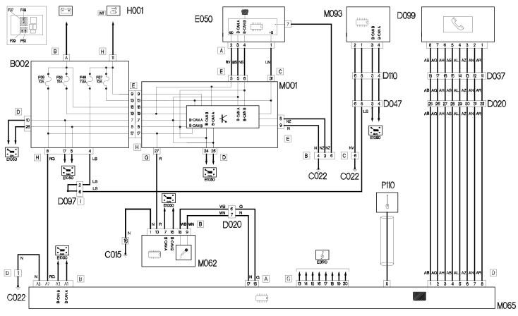

E3570 BUILT IN RADIO PHONE WIRING DIAGRAM
- Path
- Electrical equipment > ELECTRICAL FUNCTIONS > E35 RADIO ACCESSORIES > E3570 INTEGRATED RADIO PHONE > E3570 BUILT IN RADIO PHONE WIRING DIAGRAM
- Kind
- topic
- Applies to
- all engines; all production periods
- Interactive page
- https://sloeber94.github.io/elrnDB-lThss/en/#/841004770
Applies to: all engines; all production periods
Wiring Diagram

Components
Component code | Name | Assembly reference |
|---|---|---|
Junction unit under dashboard | - | |
Driver's dashboard earth | - | |
Centre dashboard earth | - | |
- | ||
D037 | Giunzione posteriore / mobiletto centrale | - |
- | ||
Short circuit coupling | - | |
- | ||
CLOCK SPRING AND STEERING WHEEL CONTROLS COUPLING | - | |
Instrument panel | - | |
Ignition switch | - | |
Body computer | - | |
7040E | ||
Info-telematic control unit (NIT) | 5580P | |
M093 | STEERING WHEEL NODE CONTROL UNIT (NVO) | - |
P110 | - |
Topics linked from this page (13)
- B002 Junction unit under dashboard
- C015 Driver's dashboard earth
- C022 Centre dashboard earth
- D020 Dashboard/rear coupling
- D047 Clock spring coupling
- D097 Short circuit coupling
- D099 Radio phone preparation coupling
- D110 Clock spring and controls to steering wheel coupling
- E050 Instrument panel
- H001 Ignition switch
- M001 Body computer
- M062 Roof control unit (NIM)
- M065 Info-telematic control unit (NIT)